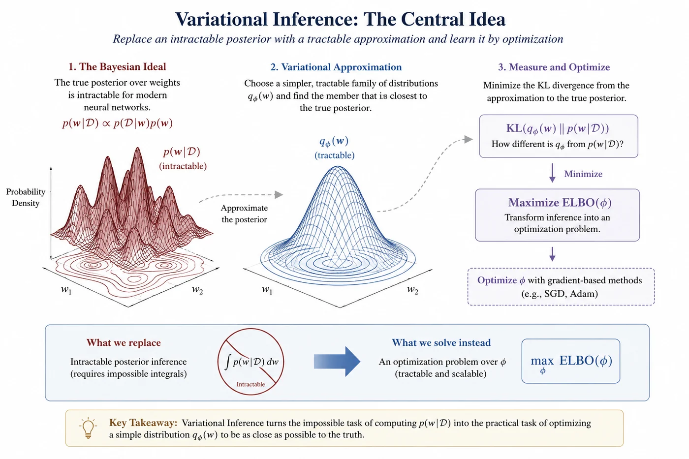
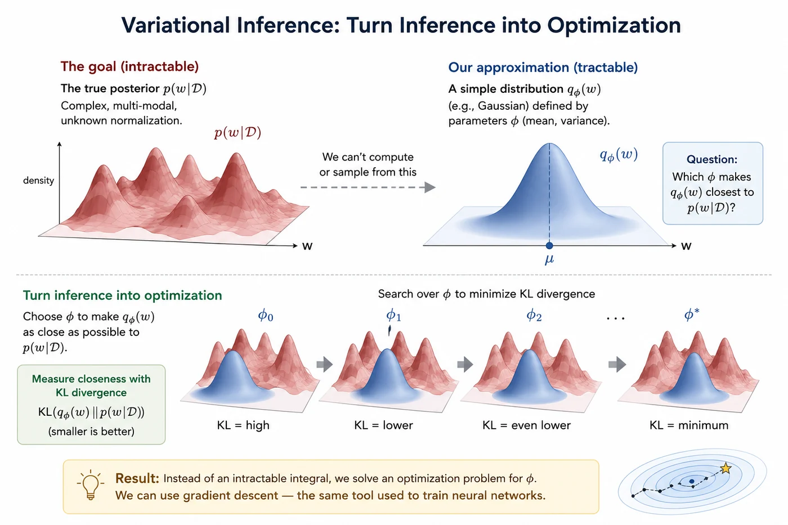
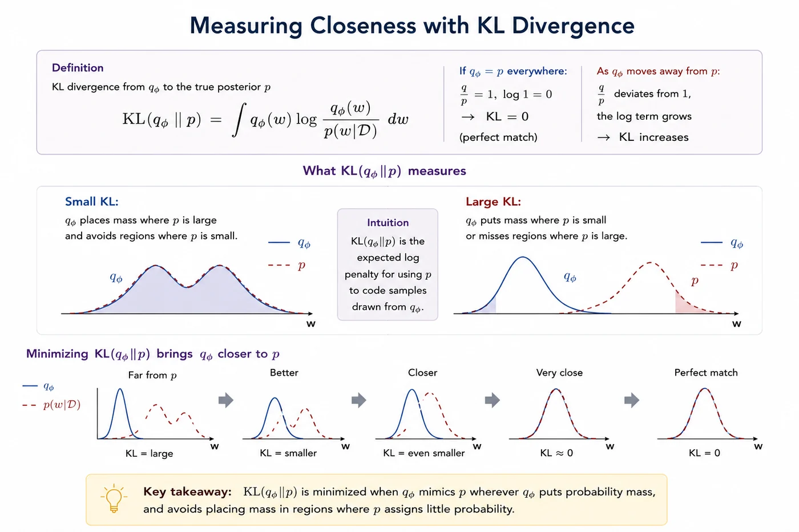
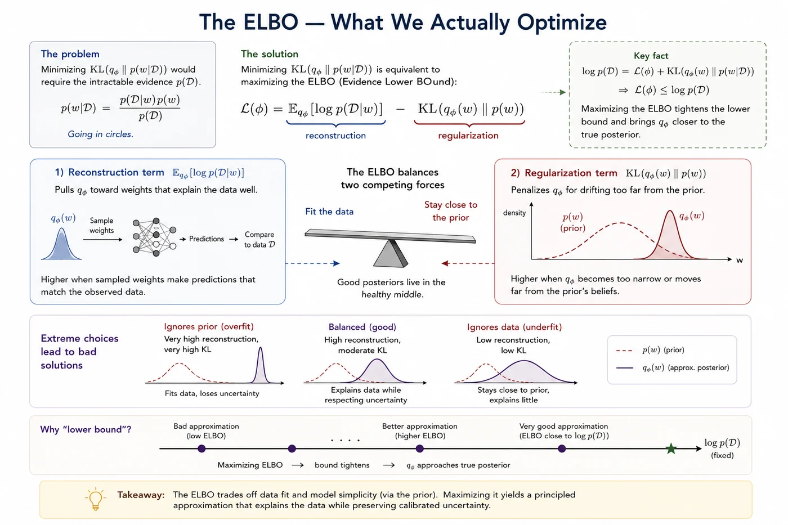
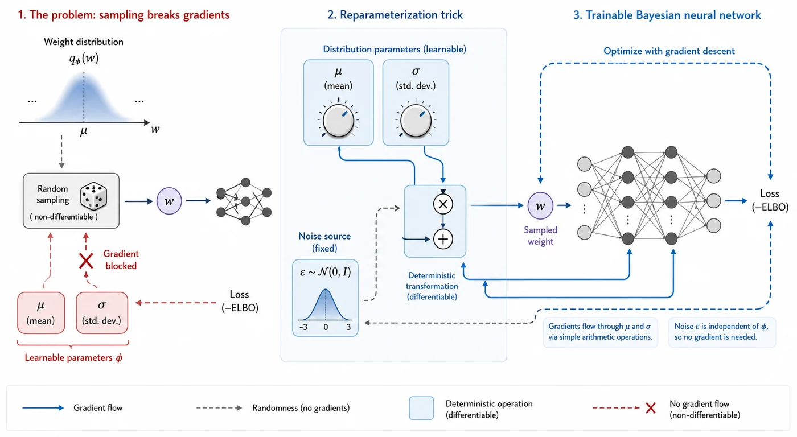
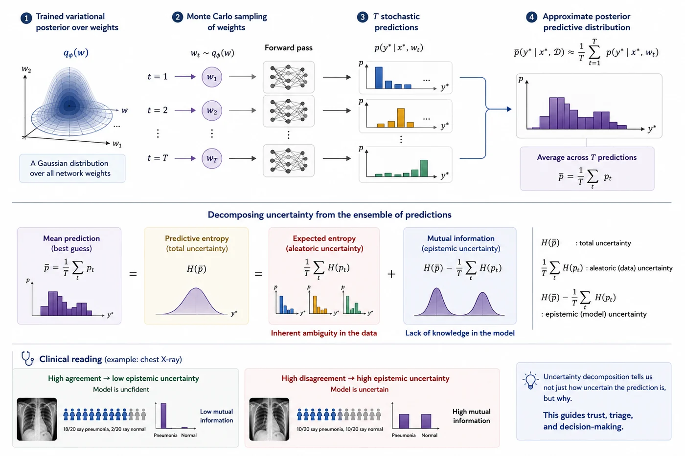

Session 5 — Variational Inference¶
Part 2 — Core UQ Algorithms
Turning an impossible integral into a trainable optimization problem.

What you'll learn in this session¶
- How Variational Inference turns an intractable posterior into an optimization problem
- What KL divergence is and why it's the right tool for measuring how close two distributions are
- What the ELBO is, what its two terms mean, and why the tension between them is healthy
- What the mean-field approximation assumes and where it breaks down
- How the reparameterization trick makes VI trainable with standard gradient descent
- What VI gives you at inference time and what its honest limitations are
🔗 Bridge from Session 4¶
In Session 4, we saw that the Bayesian ideal — averaging predictions over all plausible weight sets — requires computing a posterior $p(w|\mathcal{D})$ that is fundamentally intractable for real neural networks. Variational Inference is the first serious response to that wall. The idea: if we can't compute the true posterior, let's find the closest tractable distribution to it and use that instead.
🔄 1. The core idea — turning inference into optimization¶
Here's the key move that makes Variational Inference work. Instead of trying to compute the true posterior $p(w|\mathcal{D})$ directly — which we know we can't do — we pick a family of simpler, more manageable distributions and ask: which member of this family is closest to the true posterior?
We call this simpler distribution $q_\phi(w)$, where $\phi$ are the parameters that define its shape. In practice, $q$ is usually a Gaussian — something we can fully describe with just a mean and a variance per weight. The true posterior $p(w|\mathcal{D})$ might be complicated, multi-modal, and impossible to write down. But $q_\phi(w)$ is always a nice, clean Gaussian. The question is just: which Gaussian fits best?
This transforms the problem. Instead of an impossible integral, we now have an optimization problem — we're searching for the values of $\phi$ that make $q_\phi$ as close as possible to $p(w|\mathcal{D})$. And optimization is something we know how to do very well. We can use gradient descent, the same tool that trains standard neural networks. That's the whole trick.
| The original problem | The VI solution | |
|---|---|---|
| Goal | Compute $p(w \mid \mathcal{D})$ exactly | Find $q_{\phi}(w)$ that best approximates $p(w \mid \mathcal{D})$ |
| Method | Integration over all weights | Optimization over $\phi$ |
| Feasibility | Intractable at scale | Solvable with gradient descent |

Variational inference replaces an intractable search over all possible weight configurations with a tractable search within a restricted family of distributions. By navigating this lower-dimensional landscape, uncertainty estimation becomes a problem that can be solved using the same optimization machinery that powers modern deep learning.
📏 2. How do we measure "closeness"? — KL divergence¶
To find the best $q_\phi$, we need a way to measure how different it is from the true posterior. The tool we use is called KL divergence, written as $\text{KL}(q_\phi \| p)$. You can think of it as a kind of distance between two distributions — though it's not a true distance in the mathematical sense, because it's not symmetric. $\text{KL}(q\|p)$ is not the same as $\text{KL}(p\|q)$.
The formula looks like this:
$$\text{KL}\big(q_\phi(w) \| p(w|\mathcal{D})\big) = \int q_\phi(w) \cdot \log \frac{q_\phi(w)}{p(w|\mathcal{D})} \, dw$$
What does it actually measure? When $q$ and $p$ are exactly the same distribution, the ratio inside the log is 1 everywhere — so $\log(1) = 0$ and $\text{KL} = 0$. As $q$ moves away from $p$, the KL grows. So minimizing KL means making $q$ as similar to $p$ as possible. That's exactly what we want.

The objective is not to recover the exact posterior, but to identify an approximation that preserves the most important probabilistic structure. KL divergence provides the criterion that guides this search, translating the quality of an approximation into a quantity that can be optimized.
📐 3. The ELBO — what we actually optimize¶
Here's the catch. To minimize $\text{KL}(q_\phi \| p(w|\mathcal{D}))$, we'd need to evaluate $p(w|\mathcal{D})$ — which requires the intractable $p(\mathcal{D})$ in the denominator. We're going in circles.
The solution is elegant. Instead of minimizing KL directly, we can show that minimizing KL is equivalent to maximizing a different quantity called the ELBO — the Evidence Lower BOund:
$$\mathcal{L}(\phi) = \underbrace{\mathbb{E}_{q_\phi}[\log p(\mathcal{D}|w)]}_{\text{reconstruction term}} - \underbrace{\text{KL}\big(q_\phi(w) \| p(w)\big)}_{\text{regularization term}}$$
| Term | Name | What it does |
|---|---|---|
| $\mathbb{E}_{q_{\phi}}[\log p(\mathcal{D}\mid w)]$ | Reconstruction | Pulls $q$ toward weights that explain the data well |
| $\text{KL}(q_{\phi}(w) \,\|\, p(w))$ | Regularization | Penalizes $q$ for drifting too far from the prior |
Look at the two terms carefully. The reconstruction term pulls $q$ toward weight sets that explain the training data well. It's essentially asking: if I sample weights from $q$ and run a forward pass, how well do the predictions match the labels? The better the fit, the higher this term.
The regularization term pushes back. It penalizes $q$ for drifting too far from the prior $p(w)$. It's asking: has $q$ become so narrow and specific that it's forgotten the uncertainty we started with?
These two forces pull in opposite directions, and the ELBO finds the balance. A $q$ that fits the data perfectly but ignores the prior is overfit. A $q$ that stays close to the prior but ignores the data is useless. The ELBO finds the healthy middle — which is exactly where a good posterior approximation should be.
The name "lower bound" comes from the fact that the ELBO is always less than or equal to the true log evidence $\log p(\mathcal{D})$. Maximizing the ELBO is equivalent to tightening that bound — and as the bound tightens, $q$ gets closer to the true posterior.

Bayesian learning can be viewed as a trade-off between explaining observed data and maintaining prior structure. The ELBO formalizes this tension into a single objective that can be efficiently optimized.
⚙️ 4. Bayes by Backprop — making it trainable¶
We now have a variational distribution $q_\phi$ and an objective (the ELBO). To train this with gradient descent, we need to compute gradients of the ELBO with respect to $\phi$. But here's a subtle problem: the ELBO involves an expectation over $q_\phi$, which means we have to sample from $q$ — and sampling is not a differentiable operation. You can't backpropagate through a random draw.
The fix is called the reparameterization trick, introduced by Blundell et al. in the Bayes by Backprop paper. Instead of sampling $w$ directly from $q_\phi(w) = \mathcal{N}(\mu, \sigma^2)$, we rewrite the sample as:
$$w = \mu + \sigma \cdot \varepsilon, \qquad \varepsilon \sim \mathcal{N}(0, 1)$$
| Term | Role |
|---|---|
| $\varepsilon \sim \mathcal{N}(0,1)$ | Random noise from a fixed standard Gaussian — no parameters, no gradients needed |
| $\mu$, $\sigma$ | Learnable parameters — gradients flow through these cleanly |
This separates the randomness ($\varepsilon$) from the learnable parameters ($\mu$ and $\sigma$). The gradient can now flow through $\mu$ and $\sigma$ cleanly, because they appear as simple arithmetic operations. The randomness sits in $\varepsilon$, which has no parameters and doesn't need to be differentiated. This one trick is what makes the whole thing trainable with standard backpropagation.

A random weight realization is generated through a differentiable computation involving learnable distribution parameters and an auxiliary noise variable, enabling efficient optimization of the variational objective with standard backpropagation.
🔮 5. What VI gives us at inference time¶
Once training is done, we have a fully trained $q_{\phi}(w)$ — a Gaussian distribution over every weight in the network. At inference time, instead of a single forward pass with fixed weights, we sample weights from $q_{\phi}(w)$, run a forward pass, and repeat this $T$ times. The collection of $T$ predictions approximates the posterior predictive distribution from Session 4:
$$ p(y^* \mid x^*, \mathcal{D}) \approx \frac{1}{T} \sum_{t=1}^{T} p(y^* \mid x^*, w_t), \qquad w_t \sim q_{\phi}(w) $$
From these $T$ predictions, we can extract several useful uncertainty measures:
| Quantity | How to compute | What it means |
|---|---|---|
| Mean prediction | $\bar{p}=\frac{1}{T}\sum_t p_t$ | The model's best guess |
| Predictive entropy | $H(\bar{p})$ | Total uncertainty |
| Expected entropy | $\frac{1}{T}\sum_t H(p_t)$ | Aleatoric uncertainty |
| Mutual information | $H(\bar{p})-\frac{1}{T}\sum_t H(p_t)$ | Epistemic uncertainty |
The predictive entropy captures overall uncertainty in the final prediction, but does not explain its source. Decomposing it into expected entropy and mutual information separates uncertainty due to inherent ambiguity in the data from uncertainty due to lack of knowledge in the model. If all sampled models agree, mutual information is low and epistemic uncertainty is small. If different sampled models disagree substantially, mutual information increases, indicating uncertainty about which explanation of the data is correct.
🏥 Clinical reading
At inference time on a chest X-ray, each of the $T$ forward passes is asking: given this particular plausible version of the model, what is the diagnosis? If 18 out of 20 versions say pneumonia and 2 say normal, the model is fairly confident. If 10 say pneumonia and 10 say normal, the model is genuinely uncertain — and that's exactly the case a clinician should review directly.

Variational inference transforms a neural network from a system that produces answers into a system that produces distributions of possible answers. The structure of this distribution provides a window into what the model knows, what it does not know, and what may require further investigation.
⚠️ 6. Limitations¶
VI is principled and elegant, but it's worth being clear about where it falls short — because understanding the gaps is what lets you make good choices in practice.
⚠️ Mean-field underestimates uncertainty
By assuming weight independence, the approximation misses correlations in the true posterior. The result is a $q$ that is often too narrow — more confident than it should be. This is one of the reasons VI-based BNNs can still be overconfident on ambiguous inputs.
⚠️ Optimzation is harder than standard training
Training a BNN with VI is noticeably more unstable than standard training. The ELBO has two competing terms, the balance between them is sensitive to hyperparameters, and the loss landscape is harder to navigate. Expect to tune more carefully than you would a standard network.
⚠️ Double the parameters
Storing and training $\mu$ and $\sigma$ for every weight doubles memory and compute cost compared to a standard network. For large models this becomes significant. In practice, VI is often applied selectively to the last few layers rather than the whole network.
⚠️ Mode-seeking behaviour
Because we use $\text{KL}(q\|p)$ and not $\text{KL}(p\|q)$, VI tends to find one good mode of the posterior and concentrate around it. If the true posterior is multi-modal — which it often is for neural networks — VI may miss entire regions of plausible weight sets entirely.
📚 7. Recommended reading¶
These are widely cited landmarks in variational inference. They show how VI evolved from a general approximation strategy for graphical models into a scalable optimization-based toolkit for modern Bayesian machine learning. 🗺️
An Introduction to Variational Methods for Graphical Models
Jordan, Ghahramani, Jaakkola & Saul, 1999 — Machine Learning
One of the foundational introductions to variational methods in probabilistic graphical models. This is where many of the core ideas in this session appear in their classical form: approximating an intractable posterior with a simpler distribution and turning inference into optimization.
Stochastic Variational Inference
Hoffman, Blei, Wang & Paisley, 2013 — JMLR
The paper that made VI scalable to very large datasets using stochastic optimization. It is a key bridge between classical variational Bayes and the mini-batch training style used in modern machine learning.
Black Box Variational Inference
Ranganath, Gerrish & Blei, 2014 — AISTATS
A highly influential paper that made VI more automatic. Instead of deriving custom updates for every model, black-box VI estimates gradients of the ELBO directly, making variational inference easier to apply to complex probabilistic models.
Variational Inference: A Review for Statisticians
Blei, Kucukelbir & McAuliffe, 2017 — JASA
The standard modern review of VI. It clearly explains mean-field VI, KL divergence, the ELBO, stochastic optimisation, and the open problems that still make VI difficult. This is the best broad companion paper for Session 5.
✅ Session summary¶
| Concept | Key takeaway |
|---|---|
| 🔄 The core idea | Replace intractable $p(w|\mathcal{D})$ with tractable $q_\phi(w)$. Turn integration into optimization. |
| 📏 KL divergence | Measures how different $q$ is from $p$. Minimizing it brings $q$ as close to the true posterior as possible. |
| 📐 The ELBO | Training objective — balances fitting the data (reconstruction) against staying near the prior (regularization). |
| ⚙️ Reparameterization | Separates randomness from learnable parameters so gradients can flow through $\mu$ and $\sigma$ cleanly. |
| 🔮 At inference | Sample $T$ weight sets from $q_\phi$, run $T$ forward passes, extract mean and variance for uncertainty. |
| ⚠️ Key limitations | Overconfident due to mean-field, harder to train, mode-seeking, higher compute cost. |
➡️ Next: Session 6: Variational Inference — Implementation
Session 6 turns this theory into practice: we will build a Bayesian DenseNet for chest X-ray classification, train it with the ELBO objective, sample multiple weight configurations at inference time, and visualise what VI-based uncertainty looks like on real medical images. This is where the posterior approximation becomes a working clinical AI pipeline.